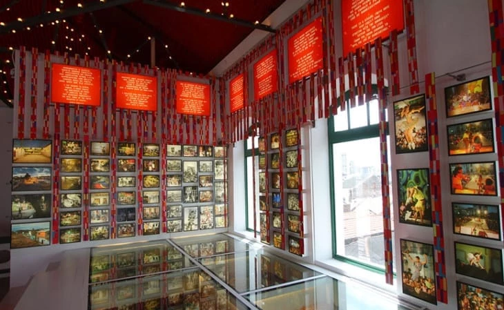

Não tem como visitar Pernambuco e não arriscar alguns passos de frevo, afinal, o ritmo foi declarado Patrimônio Imaterial da Humanidade pela Unesco! No Paço do Frevo é Carnaval o ano inteiro. Lá estão expostos fotos e documentos que contam a história do ritmo e guarda registros do carnaval pernambucano que se manterão vivos para as futuras gerações. São três andares que guardam um rico acervo e, para acompanhar a visita, os corredores são embalados pelo som do frevo!
Praça do Arsenal da Marinha, s/nº.
de terça a sexta, das 9h às 17h; sábados e domingos, das 14h às 18h; fechado às segundas. Entrada para visitação até 30 minutos antes do fechamento.
O Armazéns do Porto é o lugar ideal para aquela pausa para o almoço ou apenas para tomar um cafezinho ou uma cerveja para espantar o calor. O espaço fica bem ao lado do letreiro de Recife, na Praça do Marco Zero, e oferece uma variedade de bares, restaurantes, cafés e sorveterias. O mais legal de tudo é a vista privilegiada que se tem para o porto e para as esculturas de Brennand.

Av. Alfredo Lisboa
de segunda a quarta, das 10h às 22h; quinta, das 10h à 0h; sexta e sábado, das 10h às 3h; domingo, das 10h às 22h.